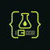

CHANNEL LIBRARY
Channels
Import a CSV to begin.
| Channel | Category | Country | Language | State | Actions |
|---|---|---|---|---|---|
| No channels yet. Import a CSV or add one by hand. | |||||
Programme guide Not loaded
Import a local XMLTV file to see programme listings.
Ready.

TABARC-CODE
CHANNEL LIBRARY
Import a CSV to begin.
| Channel | Category | Country | Language | State | Actions |
|---|---|---|---|---|---|
| No channels yet. Import a CSV or add one by hand. | |||||
Import a local XMLTV file to see programme listings.
Ready.